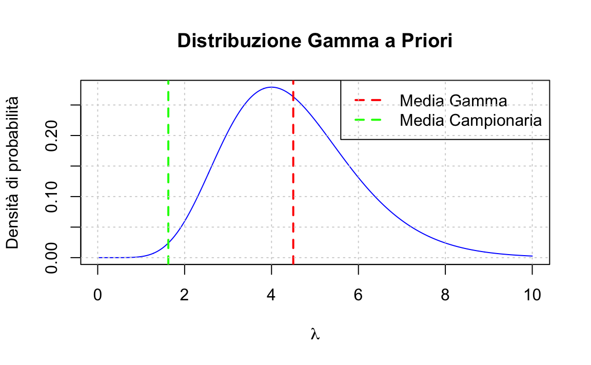
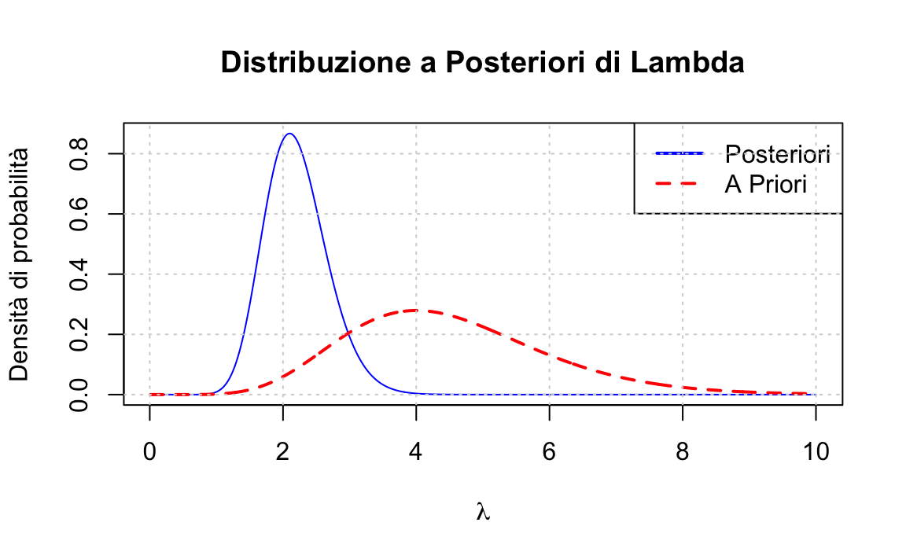
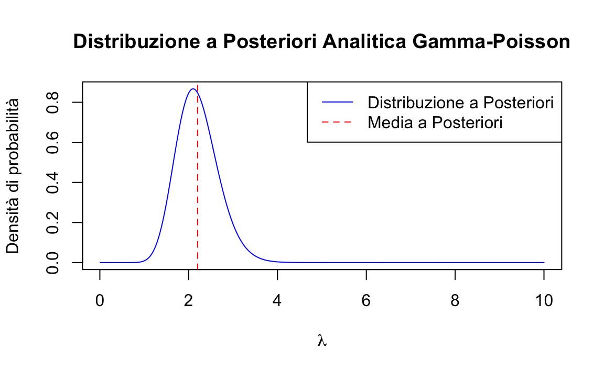

here::here("code", "_common.R") |>
source()
# Load packages
if (!requireNamespace("pacman")) install.packages("pacman")
pacman::p_load(mice)47 Modello coniugato Gamma-Poisson
Prerequisiti
- Leggere il ?sec-discr-rv-distributions e il ?sec-cont-rv-distr della dispensa.
Concetti e competenze chiave
- Comprendere la distribuzione di Poisson come un modello probabilistico adatto per descrivere eventi rari in un intervallo di tempo o spazio fisso.
- Sapere applicare il metodo basato su griglia per derivare la distribuzione a posteriori del parametro \(\lambda\) della distribuzione di Poisson.
- Conoscere il modello coniugato Gamma-Poisson, dimostrando come la distribuzione a priori Gamma si combini con la verosimiglianza di Poisson per produrre una distribuzione a posteriori Gamma.
- Sapere come calcolare e interpretare le probabilità utilizzando la distribuzione a posteriori.
Preparazione del Notebook
47.1 Introduzione
In psicologia, le variabili di conteggio (\(y\)), che indicano il numero di occorrenze di un evento, trovano ampio impiego in diversi ambiti. Ad esempio, sono usate per quantificare la frequenza dei sintomi di un disturbo o per analizzare le frequenze delle parole negli studi di psicolinguistica. Queste variabili, assumendo valori discreti, richiedono modelli statistici specifici.
Questo capitolo si focalizza sulla stima del tasso medio di incidenza (\(\lambda_i\)) di tali eventi, ovvero sul numero medio di occorrenze per unità di misura. Adotteremo un approccio bayesiano, utilizzando il modello di Poisson per descrivere la distribuzione di probabilità delle variabili di conteggio. In particolare, esploreremo la derivazione analitica della distribuzione a posteriori del parametro \(\lambda_i\), considerando una distribuzione a priori Gamma. Successivamente, verificheremo la validità dei risultati analitici mediante simulazioni Monte Carlo.
47.2 Distribuzione di Poisson
La distribuzione di Poisson è un modello probabilistico utilizzato per descrivere il numero di eventi che si verificano in un intervallo di tempo o spazio fisso, partendo dall’assunto che tali eventi si verifichino con una frequenza media costante e in modo indipendente rispetto al tempo trascorso dall’ultimo evento. Se un dato \(y\) segue una distribuzione di Poisson con parametro \(\lambda\), allora la probabilità di osservare un singolo valore \(y_i\) è data da:
\[ f(y_i \mid \lambda) = \frac{e^{-\lambda} \lambda^{y_i}}{y_i!}, \]
dove \(\lambda > 0\) rappresenta la frequenza media di occorrenza degli eventi e \(y_i\) è il numero di eventi osservati. La distribuzione di Poisson ha la caratteristica che sia il valore atteso che la varianza di una variabile casuale \(Y\) che segue questa distribuzione sono pari a \(\lambda\), cioè \(E(Y) = \lambda\) e \(\text{Var}(Y) = \lambda\).
47.2.1 Simulazione
Per capire meglio come funziona la distribuzione di Poisson, immaginiamo un paziente con un disturbo ossessivo-compulsivo. Supponiamo che in media questo paziente ripeta un’azione compulsiva 2 volte ogni ora. In questo caso, il parametro della distribuzione di Poisson è λ = 2.
La probabilità di osservare esattamente \(k\) eventi in un’ora è calcolata dalla formula:
\[ f(k | \lambda) = \frac{e^{-\lambda} \lambda^k}{k!}. \]
Nel caso specifico con \(\lambda = 2\), le probabilità per i primi valori di \(k\) sono:
La probabilità di osservare 0 eventi in un’ora è \(\frac{e^{-2} \cdot 2^0}{0!} = e^{-2} \approx 0{.}1353\).
La probabilità di osservare 1 evento in un’ora è \(\frac{e^{-2} \cdot 2^1}{1!} = 2e^{-2} \approx 0{.}2707\).
La probabilità di osservare 2 eventi in un’ora è \(\frac{e^{-2} \cdot 2^2}{2!} = 2e^{-2} \approx 0{.}2707\).
E così via per \(k = 3\), \(k = 4\), \(\dots\)
Questo esempio illustra come la distribuzione di Poisson possa essere utilizzata per modellare il numero di eventi rari che si verificano in un intervallo temporale fisso, con una frequenza media nota.
Svolgiamo ora i calcoli utilizzando la funzione dpois in R:
lam_true <- 2
# Creazione di un vettore di valori da 0 a 9
k_values <- 0:9
# Calcolo delle probabilità per ogni valore in k_values
probabilities <- dpois(k_values, lambda = lam_true)
# Stampa delle probabilità
for (i in seq_along(k_values)) {
cat(sprintf("Probabilità di %d eventi: %.4f\n", k_values[i], probabilities[i]))
}
#> Probabilità di 0 eventi: 0.1353
#> Probabilità di 1 eventi: 0.2707
#> Probabilità di 2 eventi: 0.2707
#> Probabilità di 3 eventi: 0.1804
#> Probabilità di 4 eventi: 0.0902
#> Probabilità di 5 eventi: 0.0361
#> Probabilità di 6 eventi: 0.0120
#> Probabilità di 7 eventi: 0.0034
#> Probabilità di 8 eventi: 0.0009
#> Probabilità di 9 eventi: 0.000247.2.2 Creazione del grafico della funzione di massa di probabilità
Il seguente codice R genera il grafico della funzione di massa di probabilità (PMF) di una distribuzione di Poisson con parametro \(\lambda = 2\):
# Definiamo il parametro lambda
lambd <- 2
# Generiamo i valori sull'asse x (numero di eventi)
x <- 0:9 # Possiamo aumentare o diminuire il range a seconda delle esigenze
# Calcoliamo le probabilità corrispondenti utilizzando la funzione dpois
y <- dpois(x, lambda = lambd)
# Creiamo il grafico a barre
barplot(
height = y,
names.arg = x,
col = "lightblue",
xlab = "Numero di eventi",
ylab = "Probabilità",
main = "Distribuzione di Poisson (λ = 2)"
)47.3 Verosimiglianza per un Campione di Osservazioni
Consideriamo un campione di \(n\) osservazioni indipendenti e identicamente distribuite, \(y_1, y_2, \dots, y_n\), tratto da una distribuzione di Poisson con parametro \(\lambda\). La funzione di verosimiglianza \(f(y \mid \lambda)\) rappresenta la probabilità congiunta di osservare esattamente questi valori dato un particolare valore di \(\lambda\).
Matematicamente, la verosimiglianza si esprime come:
\[ f(y \mid \lambda) = \prod_{i=1}^{n} \frac{e^{-\lambda} \lambda^{y_i}}{y_i!} = \frac{e^{-n\lambda} \lambda^{\sum_{i=1}^n y_i}}{\prod_{i=1}^{n} y_i!}. \]
Questa funzione misura la compatibilità tra i dati osservati e un dato valore di \(\lambda\). Valori di \(\lambda\) che rendono più alta la verosimiglianza sono quelli che meglio spiegano i dati osservati.
La funzione di verosimiglianza descrive quanto sia plausibile un valore specifico di \(\lambda\) dato il campione di dati osservati \(y_1, y_2, \dots, y_n\). Per ogni possibile valore di \(\lambda\), la funzione fornisce una misura della compatibilità tra il valore ipotizzato e i dati. In altre parole, essa risponde alla domanda: quanto bene questo valore di \(\lambda\) spiega i dati osservati?
Per semplificare i calcoli ed evitare problemi di overflow numerico, è comune utilizzare il logaritmo naturale della funzione di verosimiglianza, chiamato log-verosimiglianza. La log-verosimiglianza per il modello di Poisson si ottiene come:
\[ \log f(y \mid \lambda) = -n\lambda + \left(\sum_{i=1}^n y_i \right) \log \lambda - \sum_{i=1}^n \log(y_i!). \]
L’uso del logaritmo trasforma il prodotto nella somma, facilitando le analisi e la stima dei parametri.
47.4 Distribuzione Gamma
La distribuzione Gamma riveste un ruolo centrale nel modello coniugato Gamma-Poisson, poiché funge da distribuzione a priori per il parametro di tasso \(\lambda\) della distribuzione di Poisson. La sua scelta è motivata dalla proprietà di coniugatezza, che consente di ottenere una distribuzione a posteriori appartenente alla stessa famiglia della prior, semplificando significativamente i calcoli inferenziali e aggiornando in modo diretto le credenze alla luce dei dati osservati.
La funzione di densità della distribuzione Gamma è definita come:
\[ f(x \mid \alpha, \beta) = \frac{\beta^\alpha}{\Gamma(\alpha)} x^{\alpha - 1} e^{-\beta x}, \]
dove:
- \(\alpha\) (detto parametro di forma) determina la forma della distribuzione: valori più elevati di \(\alpha\) tendono a rendere la distribuzione più simmetrica;
- \(\beta\) (detto parametro di tasso o scala inversa) controlla la scala: valori più elevati di \(\beta\) concentrano maggiormente la massa di probabilità vicino all’origine.
Ad esempio:
- Una distribuzione Gamma con \(\alpha = 2\) e \(\beta = 3\) rappresenta un processo in cui eventi relativamente rari si verificano occasionalmente.
- Una distribuzione Gamma con \(\alpha = 10\) e \(\beta = 1\) descrive un processo più regolare, con eventi che si verificano con maggiore frequenza e prevedibilità.
Nota
In R, la parametrizzazione della distribuzione Gamma utilizza direttamente il parametro \(\beta\) come tasso (\(rate\)), che è l’inverso del parametro di scala (\(scale = 1 / \beta\)) utilizzato in Scipy.
Per calcolare la densità di probabilità in R, si utilizza:
dgamma(x, shape = alpha, rate = beta)# Definizione dei parametri
alpha <- 2
beta <- 3
# Generazione dei valori di x
x <- seq(0, 3, length.out = 500)
# Calcolo della densità di probabilità
pdf <- dgamma(x, shape = alpha, rate = beta)
# Creazione del grafico
plot(
x, pdf,
type = "l",
col = "blue",
lwd = 2,
xlab = "x",
ylab = "Densità di probabilità",
main = expression("Distribuzione Gamma (" ~ alpha == 2 ~ "," ~ beta == 3 ~ ")")
)
grid()Questo grafico mostra la densità di una distribuzione Gamma con \(\alpha = 2\) e \(\beta = 3\), calcolata su un intervallo \([0, 3]\).
47.5 Metodo Basato su Griglia
Supponiamo di voler calcolare la distribuzione a posteriori del parametro \(\lambda\) di un modello di Poisson, con una distribuzione a priori Gamma. Utilizziamo un approccio numerico basato sulla discretizzazione dello spazio dei parametri.
Consideriamo i seguenti dati osservati:
# Dati osservati
y <- c(2, 1, 3, 2, 2, 1, 1, 1)Adotteremo questa distribuzione a priori:
# Parametri della distribuzione a priori Gamma
alpha_prior <- 9
beta_prior <- 2
# Griglia dei valori di lambda
lambda_grid <- seq(0.01, 10, length.out = 1000)
# Calcolo della densità della distribuzione a priori
prior <- dgamma(lambda_grid, shape = alpha_prior, rate = beta_prior)
# Plot della distribuzione a priori
plot(
lambda_grid, prior, type = "l", col = "blue",
xlab = expression(lambda),
ylab = "Densità di probabilità",
main = "Distribuzione Gamma a Priori"
)
abline(v = alpha_prior / beta_prior, col = "red", lty = 2, lwd = 2)
abline(v = mean(y), col = "green", lty = 2, lwd = 2)
legend("topright", legend = c("Media Gamma", "Media Campionaria"),
col = c("red", "green"), lty = 2, lwd = 2)
grid()
Calcoliamo la verosimiglianza:
# Inizializzazione della verosimiglianza
likelihood <- rep(1, length(lambda_grid))
# Calcolo iterativo della verosimiglianza
for (yi in y) {
likelihood <- likelihood * dpois(yi, lambda = lambda_grid)
}Calcoliamo la distribuzione a posteriori non normalizzata:
posterior_unnormalized <- likelihood * priorNormalizzazione della distribuzione a posteriori:
# Fattore di normalizzazione
normalization_factor <- sum(posterior_unnormalized * diff(lambda_grid)[1])
# Distribuzione a posteriori normalizzata
posterior <- posterior_unnormalized / normalization_factorCreiamo un grafico delle distribuzioni a priori e a posteriori:
plot(
lambda_grid, posterior, type = "l", col = "blue",
xlab = expression(lambda),
ylab = "Densità di probabilità",
main = "Distribuzione a Posteriori di Lambda"
)
lines(lambda_grid, prior, col = "red", lty = 2, lwd = 2)
legend("topright", legend = c("Posteriori", "A Priori"),
col = c("blue", "red"), lty = c(1, 2), lwd = 2)
grid()
In conclusione,
- la distribuzione a posteriori è spostata a sinistra rispetto a quella a priori, indicando che i dati suggeriscono un valore più basso per \(\lambda\).
- la distribuzione a posteriori è più stretta rispetto a quella a priori, indicando una riduzione dell’incertezza.
Questo approccio numerico consente di esplorare come le osservazioni aggiornano la nostra credenza sul parametro \(\lambda\), evidenziando la potenza del metodo bayesiano.
47.6 Modello Coniugato Gamma-Poission
Per calcolare analiticamente la distribuzione a posteriori nel contesto di un modello gamma-Poisson possiamo seguire un processo diretto. Il modello Gamma-Poisson è coniugato, il che significa che la distribuzione a posteriori sarà ancora una distribuzione Gamma.
Seguendo il teorema di Bayes, possiamo scrivere la distribuzione a posteriori come:
\(f(\lambda \mid y) \propto f(y \mid \lambda) \cdot f(\lambda) ,\)
dove \(f(\lambda \mid y)\) è la distribuzione a posteriori, \(f(y \mid \lambda)\) è la verosimiglianza e \(f(\lambda)\) è la distribuzione a priori.
Definiamo la verosimiglianza (distribuzione di Poisson):
\(f(y \mid \lambda) = \prod_{i=1}^n \frac{e^{-\lambda}\lambda^{y_i}}{y_i!} = \frac{e^{-n\lambda}\lambda^{\sum_{i=1}^n y_i}}{\prod_{i=1}^n y_i!}.\)
Definiamo la distribuzione a priori (distribuzione Gamma):
\(f(\lambda) = \frac{b^a}{\Gamma(a)}\lambda^{a-1}e^{-b\lambda}.\)
Ora, moltiplichiamo la verosimiglianza per la distribuzione a priori:
\(f(\lambda|y) \propto \frac{e^{-n\lambda}\lambda^{\sum_{i=1}^n y_i}}{\prod_{i=1}^n y_i!} \cdot \frac{b^a}{\Gamma(a)}\lambda^{a-1}e^{-b\lambda}.\)
Semplifichiamo, eliminando i termini costanti (che non dipendono da \(\lambda\)):
\(f(\lambda \mid y) \propto e^{-n\lambda}\lambda^{\sum_{i=1}^n y_i} \cdot \lambda^{a-1}e^{-b\lambda}.\)
Raggruppiamo i termini:
\(f(\lambda|y) \propto \lambda^{\sum_{i=1}^n y_i} \cdot \lambda^{a-1} \cdot e^{-n\lambda} \cdot e^{-b\lambda}.\)
Semplifichiamo ulteriormente:
\(f(\lambda \mid y) \propto \lambda^{\sum_{i=1}^n y_i + a - 1} \cdot e^{-(n+b)\lambda}.\)
Riconosciamo che questa è la forma di una distribuzione Gamma con nuovi parametri:
\(f(\lambda \mid y) \propto \lambda^{(\sum_{i=1}^n y_i + a) - 1} \cdot e^{-(n+b)\lambda}.\)
Quindi, la distribuzione a posteriori è una Gamma con parametri:
- \(\alpha_{post} = a + \sum_{i=1}^n y_i\),
- \(\beta_{post} = b + n\),
dove:
- \(a\) e \(b\) sono i parametri della distribuzione Gamma a priori,
- \(\sum_{i=1}^n y_i\) è la somma di tutte le osservazioni,
- \(n\) è il numero di osservazioni.
Questa derivazione mostra come la distribuzione a posteriori mantiene la forma di una Gamma, ma con parametri aggiornati che incorporano l’informazione dai dati osservati.
Consideriamo nuovamente l’esempio precedente. Utilizzando i parametri aggiornati, rappresentiamo graficamente la distribuzione a posteriori:
# Parametri aggiornati della distribuzione a posteriori Gamma
alpha_post <- alpha_prior + sum(y)
beta_post <- beta_prior + length(y)
# Distribuzione a posteriori analitica
posterior_analytic <- dgamma(lambda_grid, shape = alpha_post, rate = beta_post)
# Plot della distribuzione a posteriori analitica
plot(
lambda_grid, posterior_analytic, type = "l", col = "blue",
xlab = expression(lambda),
ylab = "Densità di probabilità",
main = "Distribuzione a Posteriori Analitica Gamma-Poisson"
)
abline(v = alpha_post / beta_post, col = "red", lty = 2) # Media a posteriori
legend(
"topright",
legend = c("Distribuzione a Posteriori", "Media a Posteriori"),
col = c("blue", "red"),
lty = c(1, 2)
)
Il grafico mostra la distribuzione a posteriori analitica del parametro di tasso \(\lambda\) di un modello di Poisson, ottenuta utilizzando una distribuzione a priori Gamma e aggiornando i parametri alla luce dei dati osservati. La distribuzione a posteriori è calcolata come una Gamma aggiornata con i parametri \(\alpha_{\text{post}}\) e \(\beta_{\text{post}}\), e rappresenta la nostra conoscenza aggiornata dopo aver visto i dati. I risultati analitici concordano con quelli ottenuti tramite simulazione.
Procediamo ora con il calcolo della soluzione analitica per la media della distribuzione a posteriori del parametro \(\lambda\):
# Media della distribuzione a posteriori
posterior_mean <- alpha_post / beta_post
cat(sprintf("Media a Posteriori = %.3f\n", posterior_mean))
#> Media a Posteriori = 2.200
# Parametri della distribuzione a posteriori
cat(sprintf("Shape (α) = %.1f\n", alpha_post))
#> Shape (α) = 22.0
cat(sprintf("Rate (β) = %.1f\n", beta_post))
#> Rate (β) = 10.0Possiamo calcolare la probabilità di qualsiasi evento di interesse. Per esempio, ci possiamo chiedere quale sia la probabilità di osservare più di 3 compulsioni per ora:
# Probabilità di osservare più di 3 eventi
prob_y_greater_than_3 <- 1 - pgamma(3, shape = alpha_post, rate = beta_post)
cat(sprintf("Probabilità di osservare più di 3 eventi = %.3f\n", prob_y_greater_than_3))
#> Probabilità di osservare più di 3 eventi = 0.05447.7 Riflessioni Conclusive
Il modello Gamma-Poisson offre un framework robusto per l’inferenza bayesiana su dati di conteggio in psicologia. Partendo da una distribuzione a priori Gamma, che rappresenta la nostra conoscenza iniziale sul tasso medio, siamo in grado di aggiornare questa conoscenza alla luce dei dati osservati, ottenendo una distribuzione a posteriori che riflette in modo più preciso la realtà sottostante. Questo approccio permette di quantificare l’incertezza associata alle nostre stime e di prendere decisioni informate sulla base dei dati disponibili.
47.8 Esercizi
Esercizio 47.1 Consideriamo uno studio longitudinale su coppie, dove i partecipanti registrano quotidianamente la frequenza con cui nascondono il loro comportamento di fumo al partner. Basandoci sui dati di Scholz et al. (2021), assumiamo che il tasso medio di nascondere il fumo sia di 1.52 volte al giorno. Supponiamo di avere i seguenti dati giornalieri per un partecipante:
- Giorno 1: 2 volte.
- Giorno 2: 0 volte.
- Giorno 3: 1 volta.
- Giorno 4: 3 volte.
Utilizzare un modello Gamma-Poisson per stimare la distribuzione a posteriori del tasso individuale di nascondere il fumo per un partecipante specifico, dato il suo insieme di osservazioni giornaliere.
47.9 Informazioni sull’Ambiente di Sviluppo
sessionInfo()
#> R version 4.4.2 (2024-10-31)
#> Platform: aarch64-apple-darwin20
#> Running under: macOS Sequoia 15.1.1
#>
#> Matrix products: default
#> BLAS: /Library/Frameworks/R.framework/Versions/4.4-arm64/Resources/lib/libRblas.0.dylib
#> LAPACK: /Library/Frameworks/R.framework/Versions/4.4-arm64/Resources/lib/libRlapack.dylib; LAPACK version 3.12.0
#>
#> locale:
#> [1] C/UTF-8/C/C/C/C
#>
#> time zone: Europe/Rome
#> tzcode source: internal
#>
#> attached base packages:
#> [1] stats graphics grDevices utils datasets methods base
#>
#> other attached packages:
#> [1] mice_3.17.0 MASS_7.3-61 viridis_0.6.5 viridisLite_0.4.2
#> [5] ggpubr_0.6.0 ggExtra_0.10.1 gridExtra_2.3 patchwork_1.3.0
#> [9] bayesplot_1.11.1 psych_2.4.6.26 scales_1.3.0 markdown_1.13
#> [13] knitr_1.49 lubridate_1.9.3 forcats_1.0.0 stringr_1.5.1
#> [17] dplyr_1.1.4 purrr_1.0.2 readr_2.1.5 tidyr_1.3.1
#> [21] tibble_3.2.1 ggplot2_3.5.1 tidyverse_2.0.0 rio_1.2.3
#> [25] here_1.0.1
#>
#> loaded via a namespace (and not attached):
#> [1] tidyselect_1.2.1 farver_2.1.2 fastmap_1.2.0 pacman_0.5.1
#> [5] promises_1.3.2 rpart_4.1.23 digest_0.6.37 timechange_0.3.0
#> [9] mime_0.12 lifecycle_1.0.4 survival_3.7-0 magrittr_2.0.3
#> [13] compiler_4.4.2 rlang_1.1.4 tools_4.4.2 utf8_1.2.4
#> [17] yaml_2.3.10 ggsignif_0.6.4 htmlwidgets_1.6.4 mnormt_2.1.1
#> [21] abind_1.4-8 miniUI_0.1.1.1 withr_3.0.2 nnet_7.3-19
#> [25] grid_4.4.2 fansi_1.0.6 jomo_2.7-6 xtable_1.8-4
#> [29] colorspace_2.1-1 iterators_1.0.14 cli_3.6.3 rmarkdown_2.29
#> [33] generics_0.1.3 tzdb_0.4.0 minqa_1.2.8 splines_4.4.2
#> [37] parallel_4.4.2 vctrs_0.6.5 boot_1.3-31 glmnet_4.1-8
#> [41] Matrix_1.7-1 jsonlite_1.8.9 carData_3.0-5 car_3.1-3
#> [45] hms_1.1.3 mitml_0.4-5 rstatix_0.7.2 Formula_1.2-5
#> [49] foreach_1.5.2 glue_1.8.0 pan_1.9 nloptr_2.1.1
#> [53] codetools_0.2-20 stringi_1.8.4 gtable_0.3.6 shape_1.4.6.1
#> [57] later_1.4.1 lme4_1.1-35.5 munsell_0.5.1 pillar_1.9.0
#> [61] htmltools_0.5.8.1 R6_2.5.1 rprojroot_2.0.4 evaluate_1.0.1
#> [65] shiny_1.9.1 lattice_0.22-6 backports_1.5.0 broom_1.0.7
#> [69] httpuv_1.6.15 Rcpp_1.0.13-1 nlme_3.1-166 xfun_0.49
#> [73] pkgconfig_2.0.3Bibliografia
Scholz, U., Stadler, G., Berli, C., Lüscher, J., & Knoll, N. (2021). How do people experience and respond to social control from their partner? Three daily diary studies. Frontiers in Psychology, 11, 613546.